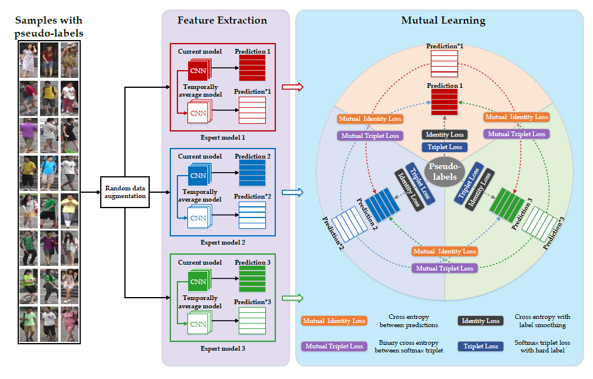
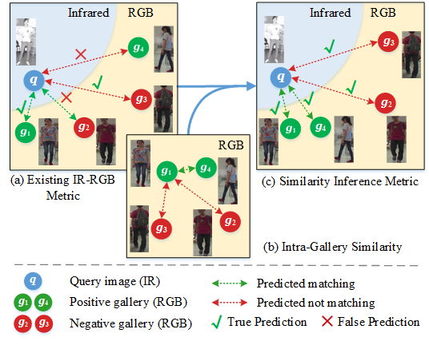

Mengxi Jia 贾梦溪Master StudentRoom 409, A Building, Peng Cheng Lab
|
|
I am a CS master student at Peking University (PKU), advised by Prof. Jian Zhang and Prof. Siwei Ma. I got a B.E. degree at Central South University.
My research interests include computer vision and machine learning, specifically for person re-identification.
|  | Yunpeng Zhai, Qixiang Ye, Shijian Lu, Mengxi Jia, Rongrong Ji, Yonghong Tian
Multiple Expert Brainstorming for Domain Adaptive Person Re-identification European Conference on Computer Vision (ECCV), 2020 [PDF][Code] |
|  | Mengxi Jia, Yunpeng Zhai, Shijian Lu, Siwei Ma, Jian Zhang
A Similarity Inference Metric for RGB-Infrared Cross-Modality Person Re-identification International Joint Conference on Artificial Intelligence (IJCAI), 2020. [PDF] |